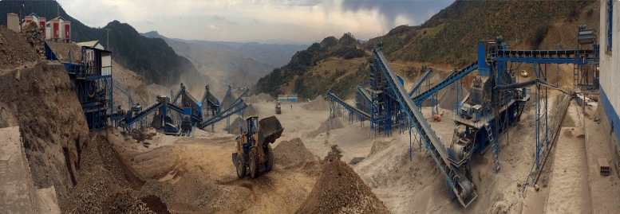
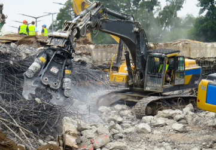
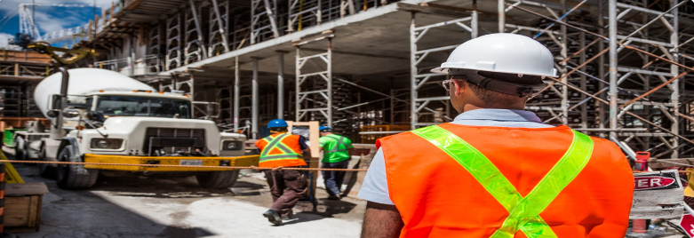

The Construction Industry plays an important role in the national welfare, including the development of residential buildings, commercial and industrial buildings, and the restoration of the nation's infrastructure and other public centres. Its growth lies in the performance of its products that provide the basis for the industrial foundation. To thrive in this industry, organizations strive for safety, quality, performance, and attention to the details for making the project profitable.
With the recent lockdown and several regulations imposed because of the COVID-19 pandemic, the construction industry has been impacted to a great extent. Now it is no longer the final product alone that is subjected to criticism but the procedures, workers, materials, etc are equally under pressure for better performance in the construction industry. Analysts and research firms are predicting steady growth in the coming years, yet multiple challenges are hovering in the construction sector.
The pandemic has severely disrupted both national and international supply chains considerably and it will take some time before everything returns to pre-COVID levels. The cost of raw materials is continuously on the rise due to shortage of its supply and government imposed taxes. The main reason for the lack of supply is due to the disruptive supply chain. Besides, to stabilize the economy, many reforms are also being introduced by the Governments. Additional cess on taxes is being introduced which will also lead to a rise in raw materials costs. The result is high expenses leading to a high-value assessment of the real estate constructions.
Safety and security are now a growing concern worldwide With COVID 19 still a threat, the most important challenge for construction companies is to keep their employees healthy and free of COVID infections on the sites. Adequate safety measures must be adopted within the construction premises Deploying a large number of employees or construction workers may lead to unprecedented infection spreads; affect work deliverables, and cause delays. On the other hand, the smaller number of employees impacts the project deadlines severely.
Because of the need of efficient and timely delivery of materials for the construction projects, there is a strong dependence on the vendors for the supply of materials and their transportation to the needed place. With so many options out there, it is hard to find the right vendor for the organization. That's why creating an extensive list of vendor selection criteria is important. One can't go into the vendor selection process without a solid idea of what is needed from a product or service as you will find yourself wasting a great deal of time and energy trying to compare different vendors.
With the various ups and downs involved in the construction site, the main focus has been on completing the project in terms of details, and on time. However, in this process, accounting takes a backseat Various problems make construction accounting challenging and make the project suffer as a result of these problems.
Some of them are:
Completion of any construction demands multiple permits from various designated authorities. Electricity, land, services, pollution control, and environment preservation, etc are the areas where clearances or permits are mandatory. Even if the builders complete the construction work on time, delays in obtaining these permits may lead to delay in handing over the projects to the clients.
| Natural disasters and hazards are unpredictable. So site selection is an important factor in the construction projects. Even if the sites are close to raw materials zone, the fact that they are located in earthquake-prone or flood-prone areas, diminishes the chances of being shortlisted for the construction work. In addition, buildings need to be designed, and built in such a way that they can withstand natural disasters and accidents. |  |
This is a system that will be purely based on certain parameters which will be used to determine the loyalty of the vendor and also the quality of the vendor overall. Parameters can be grouped into various categories and each category will have an average score of the parameters inside and then based on that we can decide which vendor to be preferred. Some of the categories could be:
a) Monetary:
It will include parameters based on the quotation submitted and credit given. It might include parameters like haggling rate (The amount of negotiation that can be done to get the best rate in comparison to the market standards), payment terms (The handling of the payment transfer and time given for each installment), transparency (The receipts of the payment received and procedure: involved the payment including legal and compliance), etc.
b) Quality:
The parameters used to measure quality will be based on vendor transparency and delivery of the material. Some of the parameters under this category will be like Material Report (It is about proper documentation against the material being supplied and its latest quality testing report i.e. around 1 year to 2 years old, which shows that the vendor keeps the information updated on its material quality), Transportation Facility (transportation to be provided or will be provided and how efficient is the transportation facility and is there any delays from the delivery time), etc.
c) Accessibility:
This category focuses on the discipline of the vendor and also helps to judge the professionalism of the vendor. It could be measured by parameters like delivery commitment (The delivery commitment given is fulfilled in what ratio that is let say 80% time it is there and only 20% time the order has been delayed), support (How easy is it to get in touch with the vendor directly or with the team to track any pending orders or discuss the quotations. Is there any digital platform or management system by which it is organized), etc.
This is a bigger problem in the industry and the bigger problem lies with the skilled laborers or groups of laborers on constant terms. Mostly the laborers can be easily found through the labor contractors but to keep these labor contractors in check is sometimes a harder journey.
For every project, it could be done to keep a check on the labor contractors by giving them a digital website link or sending them a handcrafted mail or message regarding open quotations. This is needed to ensure that the one we normally prefer does not overcharge us overtime and at the same time get to know the market value itself. It also ensured that the ones who are currently employed will not try to do something foolish up to a certain extent in fear of not getting the next contract.
Labors can still be controlled or managed in a way but the engineers and other skilled laborers and also the site management itself is tedious at times. The proper reporting is not done at times and then it is quite difficult to control the situations which arise at a later stage as consequences due to the wrongdoings which have happened in the past. To make this more efficient an audit list can be crafted per project basis which will be done on a time-to-time basis. It can be further also digitalized to look into it from anywhere in the world.
It needs a paper format though as the internet unavailability can be a reason for people to slack off their work and make excuses. This list could be done in a certain standard fixed for the projects and could be further also added in a dashboard view if it is in a digitalized format. It is also useful to check for any possible delays in the future and can be tallied like a history report every time to check for any constant errors being done to figure the root problems happening at the time of the construction.
| Safety in construction sites comes at a price but has no alternative. Most times, workers aren't informed or knowledgeable about the health and safety risks they are put to in construction sites. They must be able to read and understand Material Safety Data Sheets and are prepared for the same without risking their life or health. By using the right set of technology solutions, construction companies can help in safeguarding the construction site and protecting the health of their employees. Workplace safety compliance can be improved using intelligent thermal scanning, fall protection systems, digital fencing for ensuring social distance between the staff, and several other possibilities. |
Various challenges have been impacting the progress of the construction industry. The need of the hour is to mitigate the challenges by introducing modern technologies and scaling up the labor force. By using the right set of technology solutions and forums, construction companies can efficiently increase their productivity. Along with it, it is also important for maintaining a professional reputation and most importantly staying profitable
Download our Construction Industry Management - Case Study
Get indepth Case Study of the Construction Industry Management created by our dedicated experts
Leave a Comment
comment
|
Name |
|
|
Business/Management Consultancy for all your business needs. Follow Us |
|
SUBSCRIBE
Subscribe our Page for getting all the Articles and Case Studies of business and management fields.
Copyright @ 2020 ABC Products